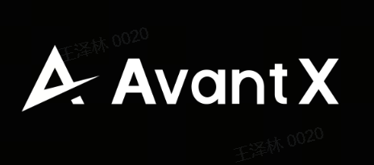

Organizers

| Time | Speaker | Talk Title |
|---|---|---|
| 13:30 to 14:30 | Prof. Sethu Vijayakumar | From Automation to Autonomy: Embodied Generative AI driving the Future of Work |
| 14:30 to 15:30 | Dr. Chongjing Cao | Electrostatic soft actuators for emerging biomedical and human-machine interaction applications |
| 15:30 to 16:30 | Prof. Shanghang Zhang | Open-World Embodied Multimodal Large Model |
| 16:30 to 17:30 | Prof. Yun Gu | Vision-Guided Endoluminal Surgery: Planning, Sensing and Navigation |
